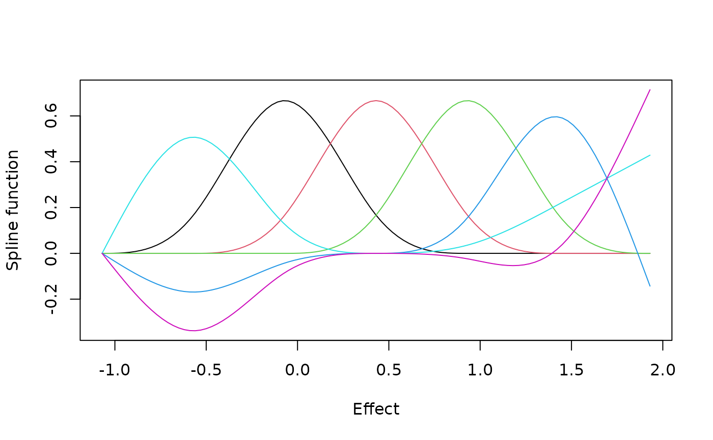
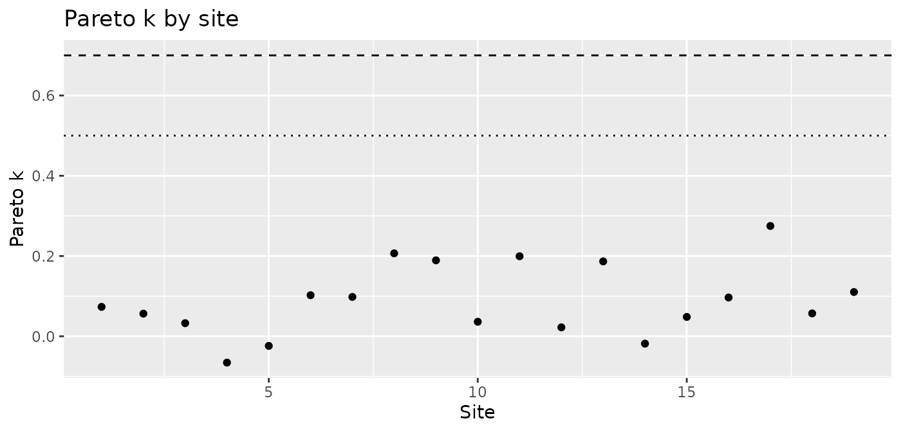
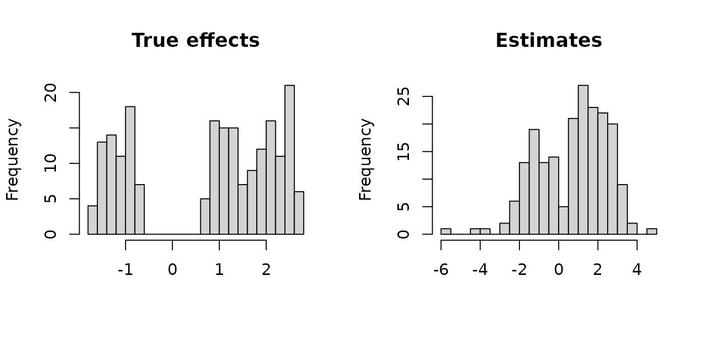

The model represents \(g\), the distribution of true effects, by the probabilities that it gives to the points of a grid, and it describes the logarithms of those probabilities by a small number of spline functions. Three things are therefore chosen before the model is fitted: where the grid begins and ends, how many points it has, and how many spline functions describe the shape of \(g\). The defaults follow the application in Lee and Sui (2025, sec. 7.2) and its replication code: a grid of 101 points that extends beyond the estimates by half their range on each side, and six spline functions. For the teacher expectancy studies the comparisons below do not separate the choices, although the result for the study with the largest estimate depends on them. For data whose true effects fall into two groups, the number of spline functions matters.
Where the grid begins and ends
A true effect is taken to lie on the grid. If the grid is too narrow,
an effect outside it cannot be represented, and the posterior
distribution of that site is pressed against the end of the grid. If it
is much too wide, part of it covers values that no site can plausibly
have. The knots of the spline functions are spread evenly over the grid,
so a wider grid also leaves fewer of them where the effects are. The
default rule widens the range of the estimates on each side by
expansion times its width.
grid <- make_efron_grid(raudenbush1985$yi, raudenbush1985$sei)
range(raudenbush1985$yi)
#> [1] -0.32 1.18
range(grid$grid)
#> [1] -1.07 1.93With the default expansion = 0.5 the grid is twice as
wide as the range of the estimates.
ends <- sapply(c(0.25, 0.5, 1), function(expansion) {
grid <- make_efron_grid(raudenbush1985$yi, raudenbush1985$sei,
expansion = expansion)
range(grid$grid)
})
colnames(ends) <- paste("expansion", c(0.25, 0.5, 1))
ends
#> expansion 0.25 expansion 0.5 expansion 1
#> [1,] -0.695 -1.07 -1.82
#> [2,] 1.555 1.93 2.68An estimate with a large standard error can lie far from its true effect, so the estimates usually spread more widely than the true effects do. Room beyond the estimates is needed all the same: the true effect of the site with the largest estimate may be larger still, and a grid that ended at that estimate would not let its posterior distribution say so.
Lee and Sui (2025, Appendix C) varied the width of the grid in a simulation with 1,500 sites, widening the range of the true effects by a quarter of its width, by half and by its full width, and found that the accuracy of the estimates and the coverage of the intervals changed little. The model was fitted there with a variational approximation and not by Markov chain Monte Carlo. The last section of this vignette looks at the same question for 19 studies, where the answer is less comfortable.
grid_method selects other rules.
"paper_simulation" and "paper_sensitivity"
place the grid around the true effects, which are known only in a
simulation; they are there so that the simulations of the paper can be
repeated, and they are of no use in the analysis of real data.
"kl_target_experimental" keeps the default end points and
chooses the number of points from the smallest standard error, by a rule
taken from the ebnm package (Willwerscheid et al. 2025). In
ebnm the rule bounds what is lost when the distribution is approximated
by a mixture of normal components on a grid, provided that the standard
errors are equal. The bound has not been shown to hold for the model of
this package, in which the distribution consists of probabilities on the
grid points and is restricted to a spline family. Because the method
uses at most 300 points, the spacing can also be wider than the rule
asks for. The method prints a message that says so, and
?make_efron_grid gives the formulas.
How many points and how many spline functions
The number of grid points, L, sets the resolution. The
posterior distribution of an effect is a distribution on the grid, whose
spacing is 0.03 for the teacher expectancy studies with the default of
101 points, and the limits of the intervals should be read to no finer a
resolution than that. Lee and Sui (2025, Appendix C) compared 51, 101 and
201 points in the same simulation and found the results nearly the same,
although the computing time grew roughly in proportion to the number of
points.
The number of spline functions, M, sets how much shape
\(g\) can have. The logarithm of the
grid probabilities is a combination of M natural cubic
spline functions (Efron
2016), which make_efron_grid() returns as the
columns of B.
matplot(grid$grid, grid$B, type = "l", lty = 1,
xlab = "Effect", ylab = "Spline function")
With few functions \(g\) has only
broad features, although even four functions allow two peaks. With more
it can follow narrower ones, such as a thin tail or two groups of
effects that lie close together. The prior distribution of the
coefficients draws them toward zero by an amount that is estimated with
them (vignette("model") describes it), which guards against
more flexibility than the data support. It does not make M
a matter of indifference, however, as the second example below
shows.
How well one fit predicts
To compare choices you need a number that says how well a fitted model describes the data. For each site and each posterior draw the model computes the density of the estimate \(\hat\theta_i\) given \(g\),
\[ p(\hat\theta_i \mid \alpha) = \sum_{j=1}^{L} g_j(\alpha)\, \phi(\hat\theta_i;\, \tau_j, \sigma_i), \]
where \(\tau_j\) are the grid
points, \(g_j(\alpha)\) their
probabilities and \(\phi(\cdot\,; \tau,
\sigma)\) the normal density with mean \(\tau\) and standard deviation \(\sigma\). The true effect of the site is
summed out. From these values loo() estimates how well the
model would predict the estimate of each site if that site had been left
out of the fit (Vehtari et al. 2017).
fit_loo <- loo::loo(raudenbush_fit)
fit_loo
#>
#> Computed from 800 by 19 log-likelihood matrix.
#>
#> Estimate SE
#> elpd_loo -5.1 4.4
#> p_loo 2.0 0.6
#> looic 10.2 8.9
#> ------
#> MCSE of elpd_loo is 0.1.
#> MCSE and ESS estimates assume MCMC draws (r_eff in [0.8, 1.0]).
#>
#> All Pareto k estimates are good (k < 0.66).
#> See help('pareto-k-diagnostic') for details.elpd_loo is the sum over sites of the log predictive
densities. A larger value is better, but the value means little by
itself; it serves to compare fits of the same data. p_loo
is what the loo package calls the effective number of parameters, and it
is not the effective_params that summary()
prints for a fit. The method is an approximation, and the Pareto k
values say for each site whether it can be relied on. A large value
means that leaving the site out would change the posterior distribution
a good deal, so that the approximation is poor for that site. Vehtari et al. (2017) take 0.7 as the limit, and
recent versions of the loo package lower it for a fit with few draws (to
0.66 for the 800 draws that raudenbush_fit keeps).
plot() shows the values by site.
plot(raudenbush_fit, type = "loo")
Comparing specifications
Call a combination of L, M and
expansion a specification. Each specification is a
different model for the same data. compare_efron_grids()
fits the model for every combination of the values given for the three
arguments and puts the results of loo() in one table. With
its defaults it compares 51, 101 and 201 grid points and four, six and
eight spline functions, nine fits in all.
compare_efron_grids(raudenbush1985$yi, raudenbush1985$sei, seed = 1985)The result of this call is stored in the package, together with the other comparisons that are discussed below.
stored <- readRDS(system.file("examples", "grid_comparison_example.rds",
package = "bayesEfron"))
stored$raudenbush
#> <bef_grid_comparison> 9 specifications, best first
#>
#> L M expansion elpd_loo se_elpd_loo p_loo elpd_diff se_diff max_rhat
#> 101 8 0.5 -4.824 4.605 2.046 0.000 0.000 1.003
#> 51 8 0.5 -4.855 4.655 2.143 -0.031 0.055 1.005
#> 201 8 0.5 -4.976 4.677 2.229 -0.152 0.078 1.005
#> 51 6 0.5 -5.188 4.464 2.079 -0.364 0.302 1.004
#> 101 6 0.5 -5.213 4.458 2.088 -0.389 0.308 1.007
#> 201 6 0.5 -5.227 4.418 2.071 -0.403 0.330 1.004
#> 101 4 0.5 -6.516 3.997 1.949 -1.692 1.026 1.008
#> 51 4 0.5 -6.554 3.972 1.960 -1.730 1.044 1.010
#> 201 4 0.5 -6.622 3.960 1.993 -1.798 1.053 1.012
#> min_ess_bulk divergences max_pareto_k sampler_seconds
#> 750.347 0 0.184 1.994
#> 709.699 0 0.263 1.746
#> 645.877 0 0.227 1.836
#> 717.751 0 0.211 1.223
#> 676.579 0 0.306 1.334
#> 1070.919 0 0.197 1.698
#> 584.869 1 0.145 1.344
#> 454.064 5 0.212 1.303
#> 654.812 2 0.220 2.262
#>
#> Rows with convergence or PSIS problems: 7, 8, 9
#> A specification that did not converge should not be selected on elpd_loo alone.The rows are in the order of elpd_loo, the best first.
elpd_diff is the difference from the first row and
se_diff is the standard error of that difference. A
difference of less than about two standard errors does not separate two
specifications. With as few as 19 sites the standard error is itself
uncertain, so the rule is a rough guide.
For the teacher expectancy studies nothing stands out. The number of
grid points hardly matters, because for a given M the three
values of L give nearly the same elpd_loo. The
fits with eight spline functions come first, and those with six follow
at a distance of about 0.4 with a standard error of about 0.3. Those
with four are 1.7 to 1.8 behind, still less than two standard errors.
They are also the rows that the note under the table names: their fits
had divergent transitions, and a fit with such a problem should not be
chosen whatever its elpd_loo. For these data the comparison
gives no reason to depart from the default.
The choice matters more when the true effects form separate groups. The second stored comparison is for simulated data of that kind, with 200 sites, true effects in two groups and unequal standard errors, following the design of the simulations in Lee and Sui (2025, sec. 5).
sim <- stored$two_groups_data
op <- par(mfrow = c(1, 2))
hist(sim$theta, breaks = 30, main = "True effects", xlab = "")
hist(sim$theta_hat, breaks = 30, main = "Estimates", xlab = "")
par(op)The two groups are plain in the true effects and blurred in the estimates, because many of the standard errors are large compared with the distance between the groups.
stored$two_groups
#> <bef_grid_comparison> 9 specifications, best first
#>
#> L M expansion elpd_loo se_elpd_loo p_loo elpd_diff se_diff max_rhat
#> 201 8 0.5 -370.762 8.681 3.774 0.000 0.000 1.007
#> 101 8 0.5 -370.783 8.684 3.745 -0.021 0.042 1.004
#> 51 8 0.5 -370.792 8.676 3.764 -0.030 0.028 1.004
#> 101 6 0.5 -371.089 8.618 3.944 -0.327 0.185 1.006
#> 201 6 0.5 -371.108 8.607 3.834 -0.346 0.230 1.006
#> 51 6 0.5 -371.165 8.588 3.780 -0.403 0.252 1.003
#> 101 4 0.5 -376.451 8.372 6.698 -5.689 1.219 1.092
#> 201 4 0.5 -378.374 8.323 7.612 -7.612 1.550 1.339
#> 51 4 0.5 -378.874 8.274 7.205 -8.112 1.782 1.055
#> min_ess_bulk divergences max_pareto_k sampler_seconds
#> 760.857 0 0.200 27.725
#> 1022.960 0 0.162 15.344
#> 873.363 0 0.103 9.322
#> 731.120 0 0.131 20.495
#> 720.307 0 0.066 38.210
#> 843.194 0 0.157 12.804
#> 30.476 0 0.126 23.106
#> 9.870 0 0.150 41.251
#> 50.815 0 0.140 11.743
#>
#> Rows with convergence or PSIS problems: 7, 8, 9
#> A specification that did not converge should not be selected on elpd_loo alone.The fits with four spline functions are 5.7 to 8.1 behind the best
one, which is 4.6 to 4.9 standard errors, but they did not converge
(vignette("diagnostics") looks at them more closely), and
the scores of fits that have not converged cannot be relied on. What the
table shows is that four functions are not a specification to use for
these data, and not how much worse they predict. The fits with six and
eight functions converged and are close to each other, with differences
of about 0.4 and standard errors of about 0.2. The number of grid points
again makes no difference that can be seen, although with 51 points the
spacing of this grid is 2.0 times the smallest standard error.
Every row of such a table is a full fit, so a comparison takes as
long as that many fits, and the column sampler_seconds
shows how the time grows with L. Since the number of grid
points made no difference in either example or in the simulation of the
paper, we suggest varying M first.
What the choices change in the results
elpd_loo measures how well the fitted \(g\) predicts the estimates \(\hat\theta_i\). That is not the same as how
accurately each true effect is estimated, and two specifications that
predict equally well can give different results for a site. The results
themselves can be compared directly. The stored file holds nine more
fits of the teacher expectancy studies, for three widths of the grid and
six, eight and ten spline functions.
sens <- stored$raudenbush_sensitivity
shown <- sens[, c("expansion", "M", "mean_g", "sd_g", "study18_mean",
"study4_mean", "study4_lower", "study4_upper",
"elpd_diff", "se_diff")]
names(shown)[5:8] <- c("study18", "study4", "lower", "upper")
round(shown, 2)
#> expansion M mean_g sd_g study18 study4 lower upper elpd_diff se_diff
#> 1 0.25 6 0.13 0.31 0.07 0.77 0.05 1.51 -0.30 0.49
#> 2 0.50 6 0.12 0.31 0.06 0.65 0.04 1.57 -0.42 0.68
#> 3 1.00 6 0.11 0.30 0.07 0.44 0.03 1.06 -0.93 1.07
#> 4 0.25 8 0.15 0.33 0.06 0.82 0.05 1.51 -0.46 0.36
#> 5 0.50 8 0.13 0.32 0.07 0.73 0.04 1.63 -0.03 0.66
#> 6 1.00 8 0.11 0.32 0.06 0.51 0.03 1.47 -0.38 0.87
#> 7 0.25 10 0.14 0.33 0.05 0.85 0.05 1.51 0.00 0.00
#> 8 0.50 10 0.13 0.33 0.07 0.75 0.04 1.63 -0.20 0.61
#> 9 1.00 10 0.11 0.34 0.06 0.58 0.03 1.51 -0.17 0.90study18 and study4 are the posterior means
of the effects of two studies, and lower and
upper are the limits of the 90% interval of study 4.
The mean of \(g\) lies between 0.11
and 0.15 in the nine fits and its standard deviation between 0.30 and
0.34. The posterior mean of study 18, whose estimate is the most
precise, lies between 0.05 and 0.07. These results hardly depend on the
specification. The posterior mean of study 4 does. That study has the
largest estimate, 1.18, and a large standard error, and its posterior
mean ranges from 0.44 to 0.85; it is smaller the wider the grid and the
fewer the spline functions. The last two columns do not say which of
these fits to prefer: the largest difference in elpd_loo
from the best of the nine is 0.9, with a standard error of 1.1.
How far an extreme and imprecise estimate is drawn in depends on the tail of \(g\), and 19 studies leave the tail uncertain. The intervals for study 4 are wide in every fit and say as much. When a conclusion rests on such a site, we suggest reporting its effect under two or three specifications and not under one.
For the 200 simulated sites the specification matters much less. Three widths of the grid and six or eight spline functions give the same results to within a few hundredths.
sens2 <- stored$two_groups_sensitivity
round(sens2[, c("expansion", "M", "mean_g", "sd_g", "coverage", "rmse",
"treedepth_hits")], 2)
#> expansion M mean_g sd_g coverage rmse treedepth_hits
#> 1 0.05 6 0.78 1.49 0.93 0.61 0
#> 2 0.25 6 0.77 1.48 0.92 0.61 300
#> 3 0.50 6 0.77 1.48 0.92 0.61 2182
#> 4 0.05 8 0.77 1.51 0.92 0.61 0
#> 5 0.25 8 0.78 1.49 0.92 0.61 0
#> 6 0.50 8 0.78 1.48 0.93 0.61 599coverage is the share of the true effects that lie
inside the 90% intervals and rmse is the root mean squared
error of the posterior means. The true effects have mean 0.76 and
standard deviation 1.47. The last column shows a cost of a wide grid:
the wider the grid, the more of the 12,000 iterations reach the maximum
tree depth.